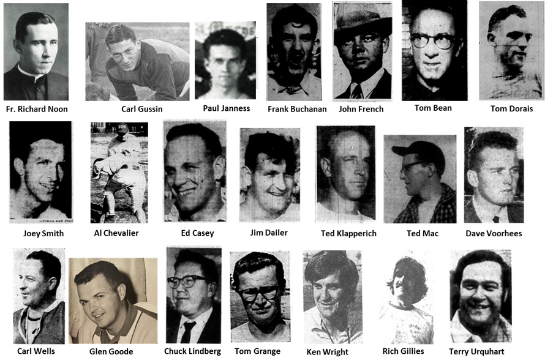

St. Mary's Football Coaches
| Coach |
Years |
Record |
| Unknown |
1927 |
1-3 |
| Henry Smith |
1928 |
2-6 |
| Fr. Richard Noon |
1929 - 1932 |
17-14-6 |
| Carl Gussin |
1933 - 1934 |
12-3-1 |
| Paul Janness |
1935 - 1938 |
9-19-4 |
| Frank Buchanan |
1939 |
0-7 |
| Frank Kennedy |
1940 - 1941 |
3-12 |
| Ray Sutter |
1942 |
1-7 |
| John French |
1943 - 1944 |
6-10 |
| Tom Bean |
1945 |
3-5 |
| Tom Dorais |
1946 |
9-0 |
| Joey Smith |
1947 - 1951 |
21-16-4 |
| Al Chevalier |
1952 |
1-1-1 |
| Ed Casey |
1952 |
2-2 |
| Jim Dailer |
1953 - 1954 |
7-8 |
| Ted Klapperich |
1955 - 1956 |
1-13-2 |
| Ed Casey |
1957 |
0-8 |
| Ted Mac |
1958 - 1959 |
0-16 |
| Dave Voorhees |
1960 |
4-4 |
| Carl Wells |
1961 - 1963 |
11-9-2 |
| Glen Goode |
1964 - 1965 |
8-5-1 |
| Chuck Lindberg |
1966 - 1968 |
9-14 |
| Tom Grange |
1969 - 1971 |
13-8-3 |
| Ken Wright |
1971 - 1976 |
24-16-1 |
| Rich Gillies |
1977 |
1-8 |
| Terry Urquhart |
1978 - 1981 |
10-25 |
| ?????? |
1982 |
1-7 |
| Mike Wilson |
1983 |
1-7 |
| Tom Farley |
1984 |
0-8 |
